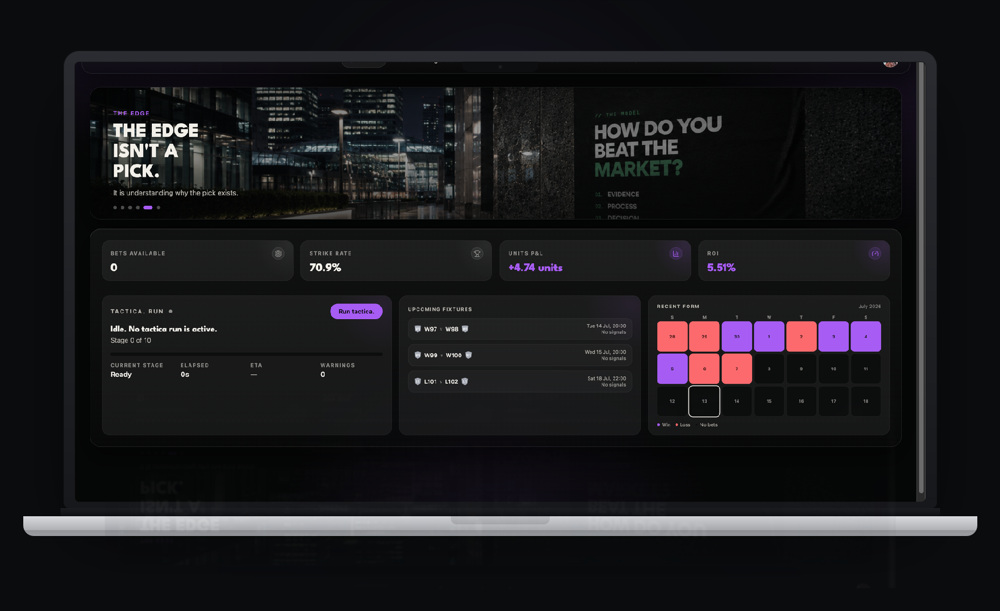

tactica. is a football intelligence platform built to turn evidence into structured, explainable analysis. Every conclusion is traced back through the reasoning that produced it — including the moments the evidence isn't strong enough to support a decision at all.

Statistics live in one place. Odds live in another. Predictions are frequently handed over with no explanation attached, and data platforms often show hundreds of numbers without ever saying which ones matter. tactica. starts from a different question: not what should I back, but what does the evidence actually say — and only then, what follows from it.
Every fixture tactica. examines moves through the same structure. No stage is skipped, and no stage is hidden.
Match Intelligence investigates a fixture the way an analyst would: form, attacking and defensive performance, goals scored and conceded, shot pressure, expected-goal evidence where it's available, home and away behaviour, squad quality, availability, and the context around the game itself.
The output isn't a single number. It's a case file — what tactica. thinks, why it thinks it, what evidence supports that view, what contradicts it, and what would need to change for the conclusion to be different.
Player Intelligence builds a structured picture of an individual's recent evidence: appearances, minutes, goals, shots, creative and defensive involvement, discipline, availability, and role within the squad.
It's currently focused on shots, shots on target, and cards — markets where the underlying evidence is strongest and most directly attributable to an individual's own pattern of play.
Data is the Reality layer of tactica. — team and player history presented visually, so it can be explored rather than just consulted. Team Data Files cover form, scoring and defensive trends, shots, corners, cards, home and away behaviour, and match-by-match history. Player Data Files cover appearances, output, involvement, and role over time.
This isn't a raw database. It's built to help a person actually see a pattern, not just be shown a table.
Neither is available yet. Both are part of why tactica. is being built the way it is — a model that can be audited isn't finished the day it launches.
No recommendation without evidence. No confidence where there isn't any. No hiding a contradiction because it's inconvenient. No bet is treated as a valid decision — sometimes it's the correct one.
tactica. is currently in development. The intelligence architecture and the case file system it's built around are being developed and refined ahead of a public launch. Progress, reasoning, and setbacks are shared as they happen, not just the finished result.
This is the sequence as it stands today, not a fixed promise — a stage gets more time if it needs it.
Join before launch and follow the build as the intelligence architecture comes together.
Prefer to follow along first? Find tactica. on X.